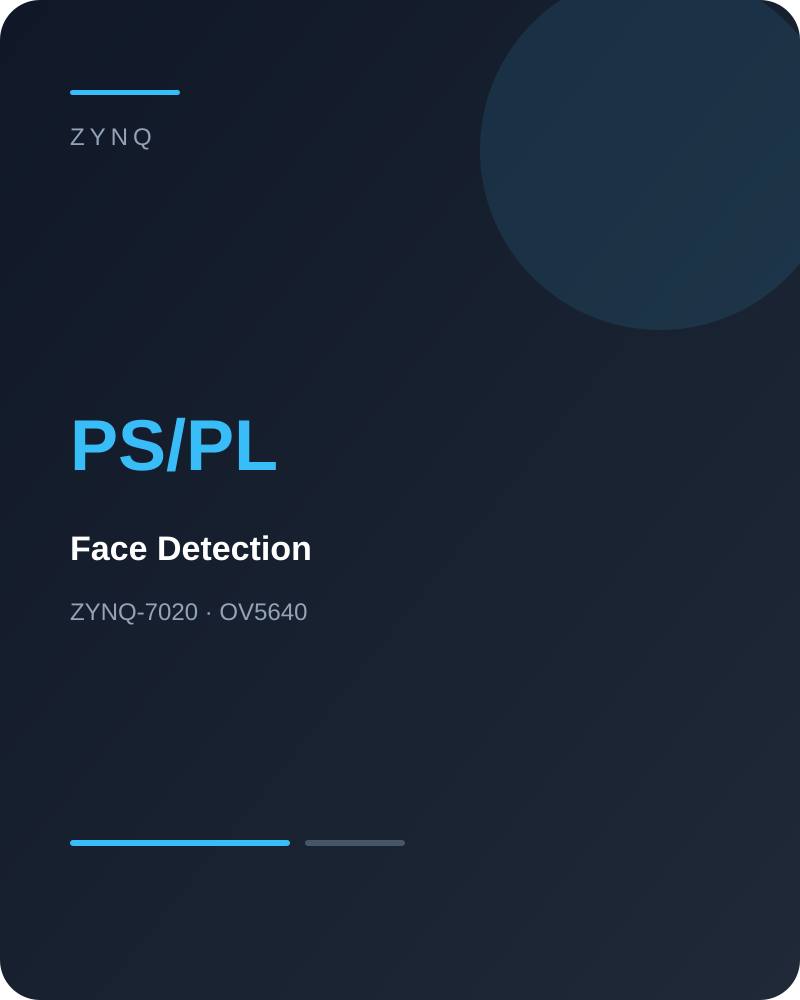

← Back to projects
PROJECT
ZYNQ 人脸检测加速
基于 ZYNQ-7020 构建图像采集、硬件加速与实时显示系统，在 PL 侧实现 OV5640 图像采集和人脸检测加速。

项目定位
ZYNQ-7020 Accelerator
主要工作
- OV5640 图像采集控制
- PL 侧人脸检测加速设计
- PS / PL 协同处理
- 实时结果显示与调试
结果
- 完成图像采集链路
- 实现硬件加速检测
- 搭建实时显示系统
PROJECT
基于 ZYNQ-7020 构建图像采集、硬件加速与实时显示系统，在 PL 侧实现 OV5640 图像采集和人脸检测加速。

ZYNQ-7020 Accelerator